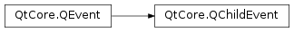

QChildEvent¶
Detailed Description¶
The
PySide2.QtCore.QChildEventclass contains event parameters for child object events.Child events are sent immediately to objects when children are added or removed.
In both cases you can only rely on the child being a
PySide2.QtCore.QObject(or, ifQObject.isWidgetType()returnstrue, aPySide2.QtWidgets.QWidget). This is because in theQEvent.ChildAddedcase the child is not yet fully constructed; in theQEvent.ChildRemovedcase it might have already been destructed.The handler for these events is
QObject.childEvent().
-
class
PySide2.QtCore.QChildEvent(type, child)¶ Parameters: - type –
PySide2.QtCore.QEvent.Type - child –
PySide2.QtCore.QObject
Constructs a child event object of a particular
typefor thechild.typecan beQEvent.ChildAdded,QEvent.ChildRemoved, orQEvent.ChildPolished.See also
- type –
-
PySide2.QtCore.QChildEvent.added()¶ Return type: PySide2.QtCore.boolReturns
trueifPySide2.QtCore.QEvent.type()isQEvent.ChildAdded; otherwise returns false.
-
PySide2.QtCore.QChildEvent.child()¶ Return type: PySide2.QtCore.QObjectReturns the child object that was added or removed.
-
PySide2.QtCore.QChildEvent.polished()¶ Return type: PySide2.QtCore.boolReturns
trueifPySide2.QtCore.QEvent.type()isQEvent.ChildPolished; otherwise returns false.
-
PySide2.QtCore.QChildEvent.removed()¶ Return type: PySide2.QtCore.boolReturns
trueifPySide2.QtCore.QEvent.type()isQEvent.ChildRemoved; otherwise returns false.
© 2018 The Qt Company Ltd. Documentation contributions included herein are the copyrights of their respective owners. The documentation provided herein is licensed under the terms of the GNU Free Documentation License version 1.3 as published by the Free Software Foundation. Qt and respective logos are trademarks of The Qt Company Ltd. in Finland and/or other countries worldwide. All other trademarks are property of their respective owners.